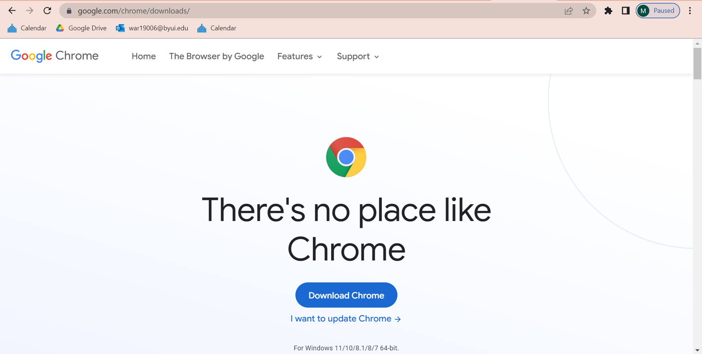
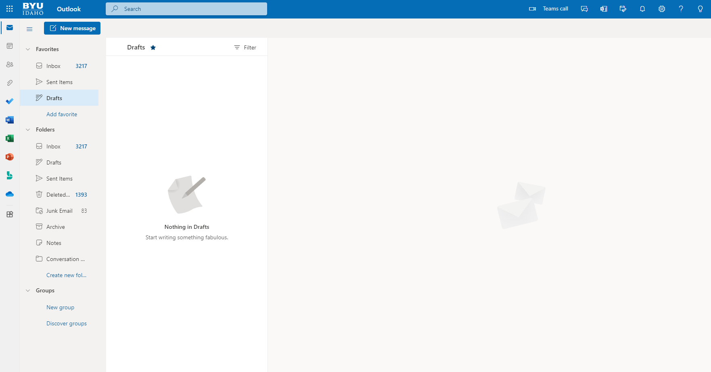

Visual Hierarchy
Google Chrome
google.com/chrome/downloads/ Visual Hierarchy is a design process that attempts to organize its information by the importance of the content. For example, the webpage for Google Chrome opens prominently to a download link, the most important element as it actually provides the service, before then having details on the program as a user scrolls further and further.
Rule of Thirds
Microsoft Outlook
outlook.office.com/mail/ The Rules of Thirds is a type of composition in which the primary section is contained within the furthest left or right third of the page, creating a more open design. As an example, Microsoft Outlook contains its navigation and lists of the right third of the screen, leaving the remaining space to display selected emails without intruding on the navigational space.
PARC: Repetition
The Repition principle of PARC states that repeated use of layouts, colors, and even fonts help to orientate the user and emphasizing important details of the website through reappearing elements to create a degree of familiarity. A good example of this principle can be found in most social media websites, such as Reddit, which use a standardized format to display individual posts to naturally draw a user's eyes to the new post.